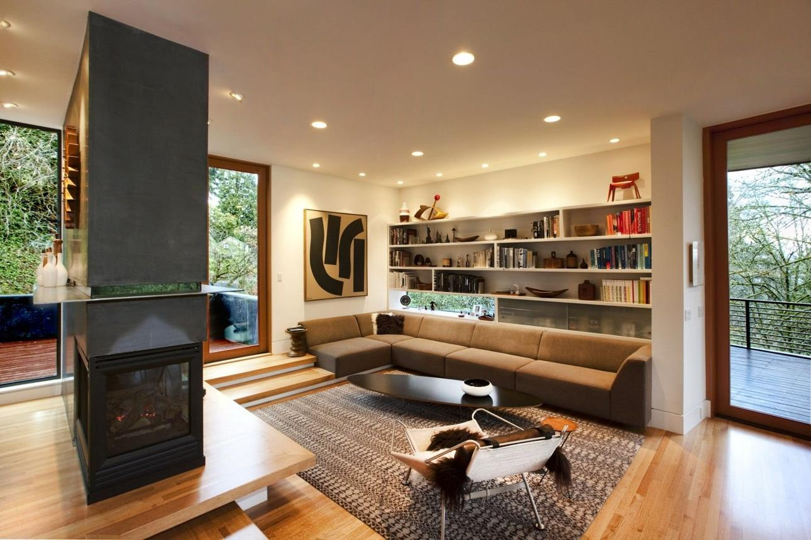
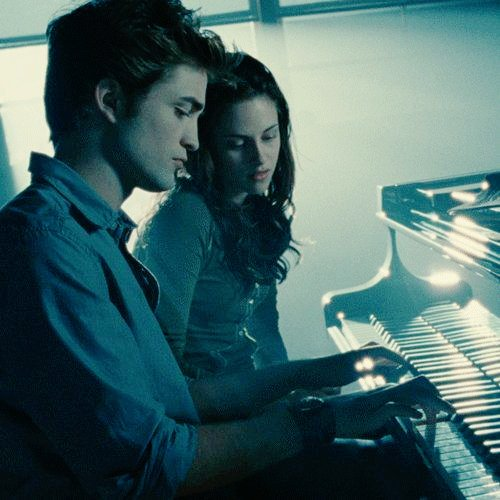
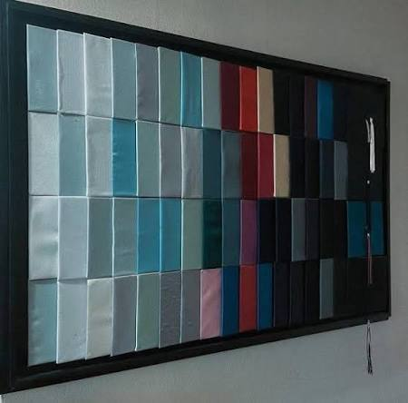
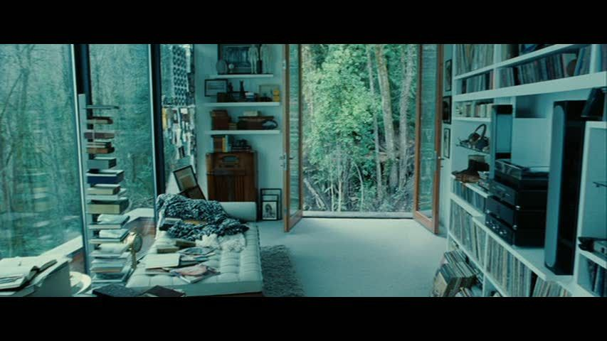
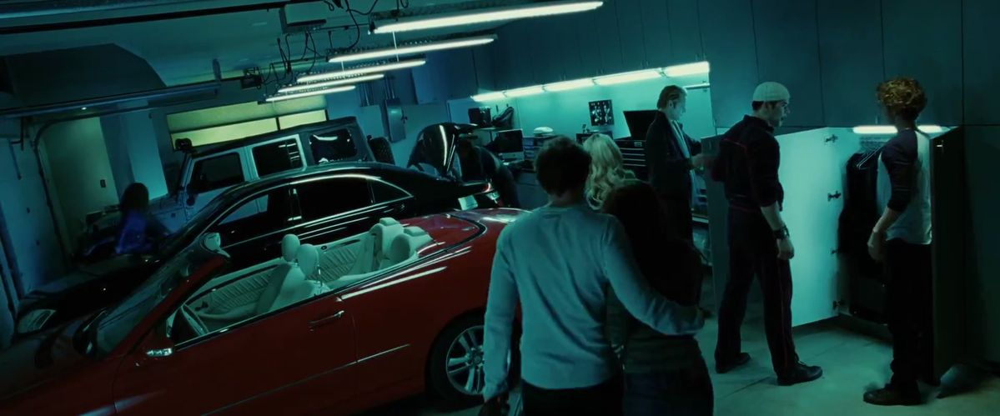

01 · CARLISLE CULLEN
Carlisle
Médico y figura central de la familia. Su forma de vivir cambió el destino de cada uno de los Cullen.
FORKS · WASHINGTON
THE CULLEN RESIDENCE
Entre los árboles de Forks se encuentra el hogar de una familia que lleva mucho más tiempo junta de lo que parece.
Entrar a la casaForks, Washington
THE RESIDENCE
Abierta al bosque, llena de luz y alejada del resto de Forks. Cada rincón guarda algo de quienes viven en ella.

Los grandes ventanales conectan la casa directamente con el bosque de Forks. Un espacio moderno para una familia con una historia mucho más antigua.
THE CULLEN FAMILY
No comparten la misma sangre, pero eligieron construir una familia juntos.
Médico y figura central de la familia. Su forma de vivir cambió el destino de cada uno de los Cullen.

El corazón de la casa Cullen. Cálida, protectora y profundamente unida a su familia.

Puede escuchar los pensamientos de quienes lo rodean. De todos, excepto los de Bella.

Puede ver posibles futuros. Su conexión con Bella comienza mucho antes de que ella forme parte de la familia.

Percibe y modifica las emociones de quienes están cerca. Comparte su vida con Alice.

Fuerte, decidida y protectora. Su historia explica gran parte de su mirada sobre la vida humana.

El más fuerte físicamente de la familia. Competitivo, divertido y compañero inseparable de Rosalie.

02 · EDWARD'S PIANO
La música es una de las partes más personales de Edward. En la casa Cullen, el piano ocupa un lugar propio dentro de su historia.
♪ BELLA'S LULLABY03 · GRADUATION
Permanecer demasiado tiempo en un mismo lugar levantaría sospechas. Por eso los Cullen vuelven a empezar: nuevas ciudades, nuevas escuelas y nuevas graduaciones.


04 · EDWARD'S ROOM
Edward no duerme. Su habitación refleja una existencia diferente: música, libros y décadas de recuerdos acumulados.
05 · THE GARAGE
Los autos también forman parte de la personalidad de algunos miembros de la familia.

THE CULLEN RESIDENCE
Para el resto de Forks, es solamente la casa de una familia reservada. Para Bella, termina convirtiéndose en mucho más.
Volver a Mundo Twilight